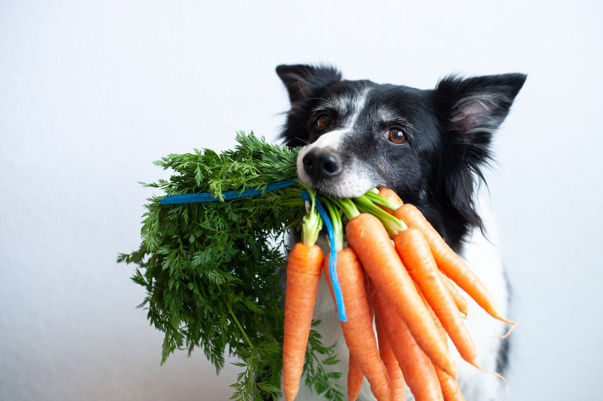

Pet Nutrition
As a pet owner, you want the best for your furry friend. That's why we're dedicated to providing you with the latest information on pet nutrition. From understanding your pet's dietary needs to choosing the right food, we've got you covered. Our team of experts has years of experience in the pet industry and is passionate about helping you make informed decisions about your pet's health.
We believe that every pet deserves a healthy and happy life, and that starts with a balanced diet. Whether you're a seasoned pet owner or a newcomer to the world of pet parenthood, we're here to guide you every step of the way.

Nutrition Basics
Proper nutrition is essential for your pet's overall health and wellbeing. Here are some key things to keep in mind:

Protein
The building block of life, protein is essential for your pet's growth and maintenance. It's found in animal-based ingredients like chicken, beef, and fish, as well as plant-based ingredients like beans and lentils.

Fat
A source of energy, fat is important for your pet's skin, coat, and brain function. It's found in ingredients like chicken fat, salmon oil, and coconut oil.

Carbohydrates
While not essential, carbs can provide energy and fiber for your pet. They're found in ingredients like rice, oats, and sweet potatoes.

Vitamins and Minerals
These micronutrients are essential for your pet's overall health. They're found in ingredients like fruits, vegetables, and whole grains.
In addition to these macronutrients, your pet also needs access to fresh water at all times. Dehydration can lead to serious health problems, so make sure your pet always has a clean, filled water bowl.
Pet Food Options
With so many pet food options available, it can be overwhelming to choose the right one for your pet. Here are some popular options:

Kibble
A convenient and affordable option, kibble is a popular choice for many pet owners. It's available in a variety of flavors and textures, and can be a good option for pets with dental issues.

Canned Food
A more expensive option, canned food can provide a higher moisture content and more protein. It's a good option for pets with digestive issues or those who need a little extra hydration.

Raw Food
A growing trend, raw food diets involve feeding your pet uncooked meat, fruits, and vegetables. This option requires careful planning and handling to ensure food safety.

Homemade Diets
If you're feeling adventurous, you can try making your own pet food at home. This option requires careful planning and attention to nutritional balance, but can be a great way to ensure your pet is getting exactly what they need.
Resources
Want to learn more about pet nutrition? Check out these resources: